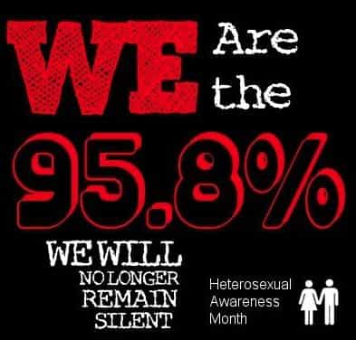

Daryush "Roosh" Valizadeh created ROK in October 2012. You can visit his blog at RooshV.com or follow him on Twitter and Facebook.


The World Health Organization (WHO) has come out with new guidelines that advise all homosexual men without HIV to take anti-HIV drugs to prevent themselves from becoming infected. This policy has presumably come about because HIV prevention education has not gotten through to homosexual men who continue to practice unsafe anal sex with dozens of new partners a year. This has hastened the global spread of the virus.
The World Health Organization has suggested for the first time that all men who have sex with men should take antiretroviral medicine, warning that HIV infection rates among gay men are exploding around the world.
In guidelines published Friday, it said that it “strongly recommends men who have sex with men consider taking antiretroviral medicines as an additional method of preventing HIV infection.” Similar guidelines were issued by the U.S. in May.
While the media has done a great job portraying homosexuals as “just like” heterosexuals (deserving of marriage benefits and infinite compassion), it’s clear that the similarities are few. Homosexual men engage in extreme high-risk and extreme promiscuous activity and, as the article linked above states, are “19 times more likely than the general population to be infected by HIV.” Bisexual men have become the perfect vessel to transmit the HIV virus to the heterosexual population, especially to women, who are more likely than men to become infected by HIV during patriarchal male-female sex.
Last year, the NBC made a stink about gay men not being able to donate blood, and even now there is a growing political movement to allow gay men to donate. Thankfully for my relatives in the US who I hope never needs donated blood, the ban on gay men from donating still stands, because health organizations (WHO, FDA) fully understand the danger that homosexual men pose to society due to their degenerate lifestyle.
This news is obviously important from a health standpoint, especially since it involves a disease that kills people. That means the American media has reported it fully, right? Wrong. Let’s compare the reportage of the new WHO guideline with the CIA’s jokey Twitter feed:

The American media has become so infected with the politically correct virus that it is silent when it comes to informing the public of a real virus, all because it contradicts their heterophobia party line that aims to paint gay couples as wonderful and loving.
Male homosexuality is not monogomy, hand-holding, and baking—it’s ass fucking an insane amount of strange men, often without protection and without any care of not spreading HIV. Here’s what one heterosexual man learned about this lifestyle:
From hearing them talk, I know there are (public) places in town where they can go and get fucked by multiple dudes during a fucking lunch break if they want, without having to pre-organise anything first. They said you go there, make eye contact, and fuck. One bragged about 10 guys going up him, one after the other, and another said “That’s pretty good for this time of day!” This, in a public fucking place where anyone could walk in!
I disputed the ease and numbers once, and said they were bullshitting and big noting themselves. One of the fucking nurses knew my private email and put my stats on a mailing list without me knowing just to prove his point, and I woke up one morning to 150+ messages in my inbox offering to suck or ride my cock, without even knowing what I looked like. In just under six hours! I wasn’t fucking impressed, but what was I going to do, file a sexual harassment suit like a pussy? I mass deleted, but I guarantee you one of those would have been from him.
This in a country town 1/10th the size of San Fran, in a supposedly-homophobic country, pre-Grinder. …self-reported statistics are prone to people underplaying their sexual experience for not wanting to appear too promiscuous.
Gay acceptance is built on the false myth that they’re ‘just like you an me’ and that ‘love is love’. To win societal acceptance, they need to obsessively pretend they’re family-focused, because they seem to operate on two driving desires: sex and approval, and children offer neither, though I suppose being seen to be good parents could offer narcissistic supply.
I was tolerant when I was younger. My views about homosexuality changed due to my day-to-day experience working with gay men, right from the horse’s mouth. They function like children. I don’t hate them, but I don’t see why society has to excessively-champion them just because they have such a voracious need for approval.
A common argument for homo acceptance is the following: “Why do you care how two gays live or whether they want to get married?” Because their lifestyle is spreading a virus that can kill people who aren’t gay. Society should rightfully accept that homosexual men are the bringers of death, a sort of grim reaper wrapped up in fuzzy progressive packaging. Even the FDA is vigorously fighting attempts to allow them to donate blood for the general population. We should be thankful they are on the side of those who don’t have HIV or engage in activities which easily spread it.

Whenever someone waves a rainbow flag in your face and insists that you get with the times, tell them that maybe they can start a beef instead with the World Health Organization. They are so alarmed at what gay men are doing that they are pushing a desperate and expensive policy to prevent an epidemic that is not being controlled in spite of everything we know about preventing HIV with condom use. The least we can do is keep this virus contained within the homosexual population, and it may soon be prudent to even consider legislation that prevents homosexuals from sleeping with non-homosexuals.
 If you like this article and are concerned about the future of the Western world, check out Roosh's book Free Speech Isn't Free. It gives an inside look to how the globalist establishment is attempting to marginalize masculine men with a leftist agenda that promotes censorship, feminism, and sterility. It also shares key knowledge and tools that you can use to defend yourself against social justice attacks. Click here to learn more about the book. Your support will help maintain our operation.
If you like this article and are concerned about the future of the Western world, check out Roosh's book Free Speech Isn't Free. It gives an inside look to how the globalist establishment is attempting to marginalize masculine men with a leftist agenda that promotes censorship, feminism, and sterility. It also shares key knowledge and tools that you can use to defend yourself against social justice attacks. Click here to learn more about the book. Your support will help maintain our operation.